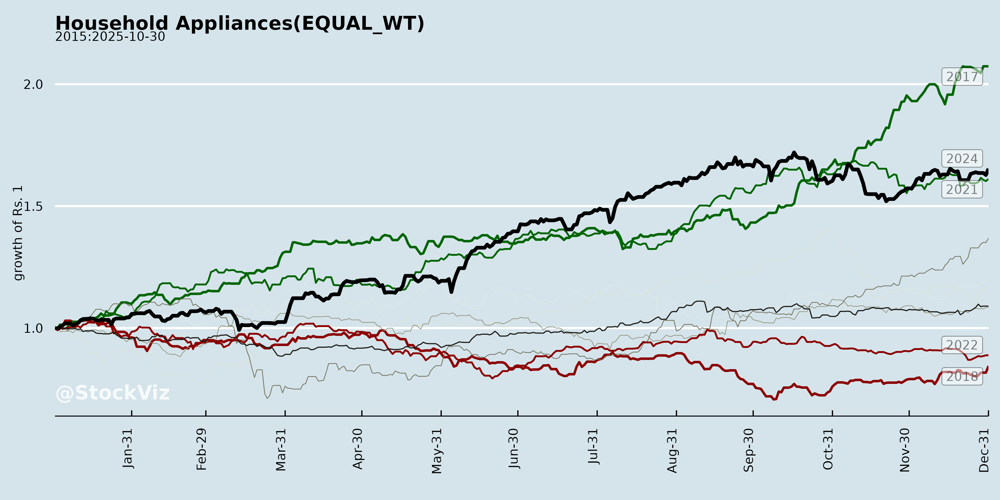
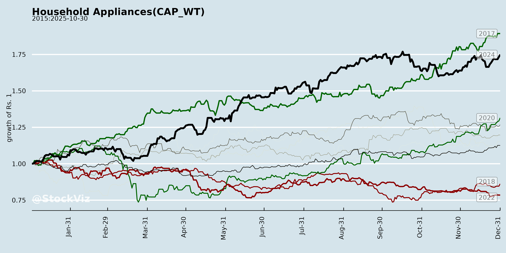
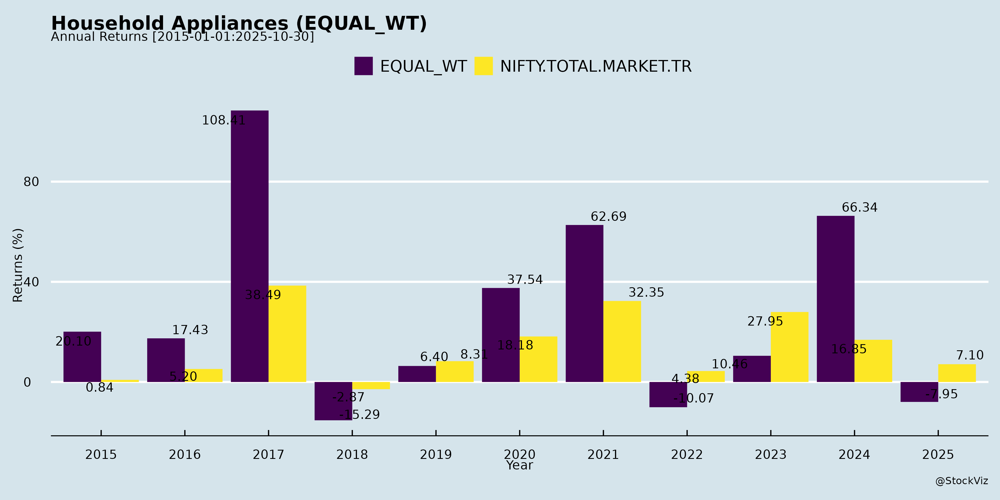
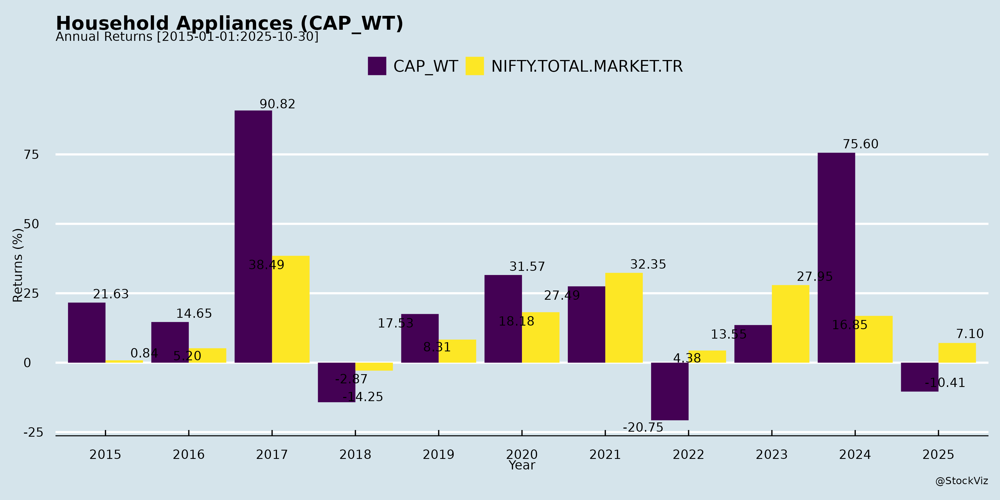
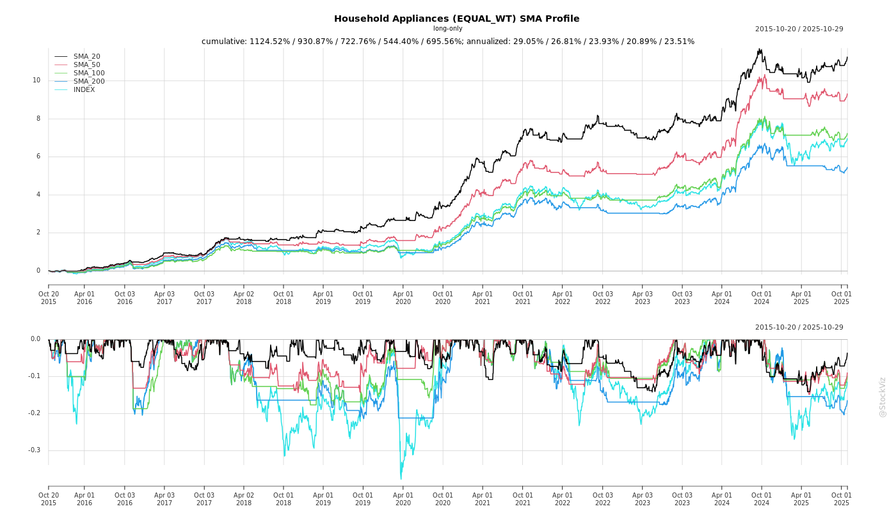
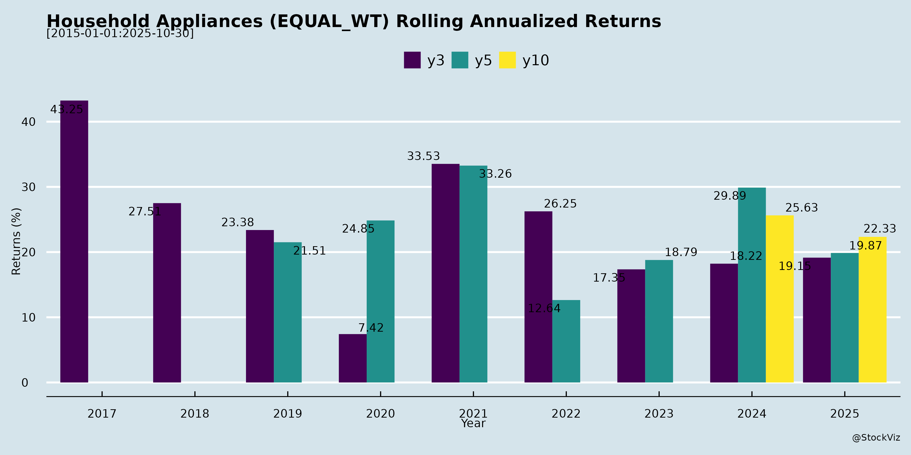

asof: 2025-12-03
Analysis of Indian Household Appliances Sector (Based on Q2 FY26 Earnings and Announcements)
The provided documents (primarily Q2 FY26 earnings transcripts from Voltas, Blue Star, Eureka Forbes, Bajaj Electricals, and analyst/investor meet schedules from LG, Crompton, Whirlpool, V-Guard, Symphony, etc.) offer insights into the sector’s performance amid a challenging H1 FY26. The sector (encompassing cooling appliances like ACs/fans/coolers, lighting, kitchen/small durables, water purifiers, and services) faced seasonal and policy disruptions but shows resilience in diversified segments. Below is a structured analysis of headwinds, tailwinds, growth prospects, and key risks.
1. Headwinds (Short-term Pressures in H1 FY26)
2. Tailwinds (Positive Structural Shifts)
3. Growth Prospects (H2 FY26 and Medium-term Outlook)
4. Key Risks
Summary
The Indian household appliances sector navigated a “rain-interrupted” H1 FY26 with ~5-10% de-growth in seasonal cooling/fans (due to monsoon, inventory, GST deferral), offset by 10-16% growth in projects/lighting/non-seasonal appliances/services. Headwinds are largely transitory (weather/GST), with tailwinds from policy (GST/BEE) poised for H2 rebound (Dec-Mar critical for inventory clearout). Growth prospects are robust at 12-18% CAGR medium-term, fueled by premiumization, diversification (commercial/services ~30-40% buffers), and low penetration. Risks center on execution amid weather/macro volatility, but resilient balance sheets (debt-free Bajaj; strong order books) and share gains mitigate. Overall outlook: Cautiously optimistic for FY26 double-digit recovery, with leaders like Voltas/Blue Star/Bajaj positioned for outperformance via scale and mix shifts. Investors should monitor Q3 secondary sales and winter demand.
asof: 2025-11-30
Summary Analysis: Indian Household Appliances Sector
Using the provided regulatory filings from key players (Voltas, Blue Star, Amber Enterprises, Crompton, Whirlpool, V-Guard, Eureka Forbes, TTK Prestige, IFB Industries, Symphony, Bajaj Electricals, Johnson Controls-Hitachi), the sector exhibits stable but mixed near-term performance amid routine corporate activities, minor regulatory hiccups, and strategic moves like fundraising and stake sales. V-Guard’s detailed H1 FY26 results provide the most granular financial insights (standalone revenue ₹2,679 Cr, up 1% YoY; profit ₹122 Cr, down 9% YoY; consolidated revenue ₹2,807 Cr, up 1% YoY; profit ₹139 Cr, down 14% YoY), reflecting modest growth with margin pressures. Other filings highlight operational continuity, cost optimization, and compliance. Below is a structured analysis of headwinds, tailwinds, growth prospects, and key risks.
Headwinds (Challenges Pressuring Performance)
Tailwinds (Supportive Factors)
Growth Prospects (Opportunities Ahead)
Key Risks (Potential Threats)
| Risk Category | Details | Quantifiable Impact (from Filings) | Mitigation |
|---|---|---|---|
| Regulatory/Tax Disputes | GST penalties (Bajaj: reduced to ₹0.01L from ₹8.55L; JCH: VAT disallowance ₹14.33L); consumer order (Crompton: ₹5K + replacement). | Low (total <₹25L across firms); no material financial hit. | Appeals/refunds ongoing; routine for sector. |
| Working Capital Strain | V-Guard: Inventory +ve movement but trade receivables down; cash conversion reliant on receivables (₹391-428 Cr). | H1 CFO strong but YoY dip (standalone -46%). | Improving receivables cycle. |
| Foreign Ownership Changes | Whirlpool divestment (to 40%); potential control shifts. | $166M proceeds; debt reduction positive but ops uncertainty. | Monitor further sales. |
| Litigation/Consumer | Minor disputes (Crompton air cooler); physical share re-lodgement (IFB). | Negligible; no systemic issues. | Compliance-focused. |
| Macro (Inflation/Competition) | Cost pressures (employee/depreciation up); YoY profit dips. | V-Guard EBITDA margin ~6% (stable QoQ). | VRS/ESOP for efficiency. |
Overall Outlook: Neutral to Positive. Sector faces near-term headwinds from costs/divestments but buoyed by fundraising and cash generation. Growth prospects hinge on Q3 festive/AC demand (watch Voltas/Blue Star results). Risks are low materiality, mostly operational/regulatory. Investors should track H1 results from others for confirmation; V-Guard’s stability suggests resilience in diversified appliances (fans, stabilizers, etc.).
Data as of filings up to Nov 2025; sector capex/debt reduction supportive for FY26 recovery.
asof: 2025-12-03
Analysis of Indian Household Appliances Sector
The provided documents (primarily Q2 FY26 earnings transcripts, investor presentations, and regulatory filings from key players like Voltas, Blue Star, Eureka Forbes, Bajaj Electricals, LG Electronics India, Crompton, Symphony, and others) offer insights into the sector’s dynamics. The sector encompasses cooling (ACs, fans, coolers), lighting, small domestic appliances (mixers, irons, kettles), water purifiers/softeners, air purifiers, vacuum cleaners/robotics, and EPC/projects. It faces cyclicality (weather-dependent) but benefits from low penetration (~6-7% urban for water purifiers; <2% for vacuums/robotics) and rising incomes/urbanization.
Headwinds (Short-Term Challenges)
Tailwinds (Positive Catalysts)
Growth Prospects
Key Risks
Summary
The Indian household appliances sector (~₹1 lakh Cr+) is at an inflection: H1 FY26 headwinds (monsoons, inventory, GST deferral) caused 4-17% de-growth in cooling/small appliances, but H2 tailwinds (GST cuts, BEE upgrades, winters) signal rebound. Growth prospects are robust (15-20% CAGR to FY30) via premiumization, diversification (robotics/service >20% CAGR), and digital platforms unlocking CLTV. Risks center on weather, inventory overhang, and competition, but resilient players (e.g., Voltas/Blue Star market leaders; Eureka service moat) are positioned for 17-24% CAGR ambitions. Overall: Cautious optimism—H2 recovery + structural drivers outweigh near-term pain.
asof: 2025-12-02
Indian Household Appliances Sector Analysis (Q2/H1 FY26 Insights from Filings)
The sector, dominated by cooling products (ACs, fans, coolers) and diversified appliances (kitchen, lighting, washing machines), faced a challenging Q2 FY26 due to weak summer demand but showed resilience through diversification. Key insights from Voltas, Blue Star, Crompton, TTK Prestige, Symphony, V-Guard, Eureka Forbes, IFB, Bosch HC (JCHAC), and others:
Headwinds (Challenges)
Tailwinds (Positives)
Growth Prospects
Key Risks
Overall Summary: Q2 FY26 was a trough (revenue -10-20% YoY for cooling majors), but fundamentals intact with diversification mitigating risks. H2 revival likely, favoring leaders like Voltas/Blue Star (EBITDA margins 5-7%). Monitor inventory normalization and litigation. Sector poised for 12-15% FY26 growth post headwinds.
Copyright © 2023 SAS Data Analytics Pvt. Ltd. All rights reserved.